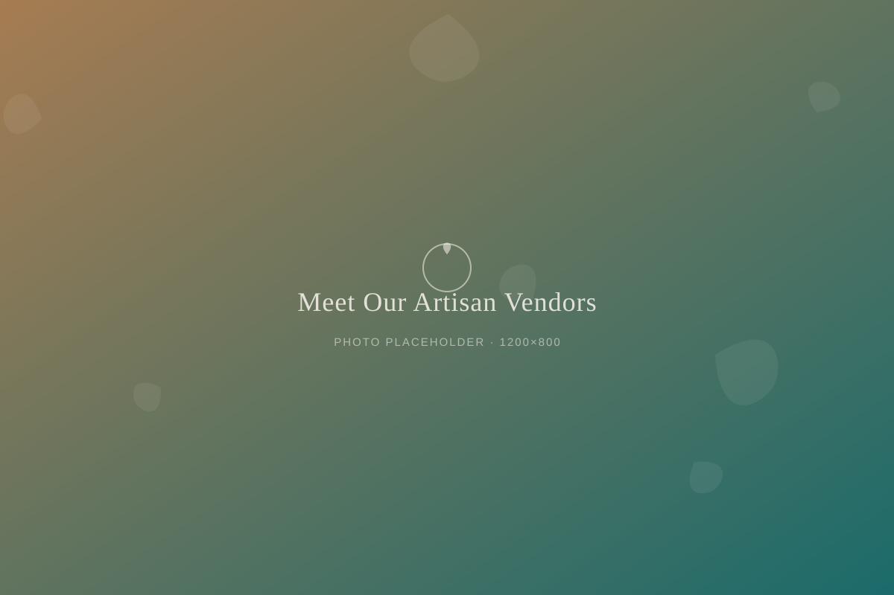

Marketplace
Meet Our Artisan Vendors

Small shelves, local hands
Tucked between the bookshelves and the bar at Vine & Sunset, you'll find a handful of shelves that don't belong to us. They belong to Akron-area makers who pour their evenings and weekends into candles, clay, skincare, and paper goods. We keep the shelves small on purpose. Every maker we carry, we've met in person, and every item has a story we can actually tell you.
Cuyahoga Candle Co.
Rosa and her husband Dell started pouring soy candles at their kitchen table in Kenmore three years ago, using scent combinations built around what was blooming in their own backyard. Their bestseller, Porch Light, smells like cut grass and honeysuckle right after a summer rain. They still hand-label every jar themselves, which is why you'll sometimes catch a slightly crooked sticker. We think that's part of the charm.
Firethorn Ceramics
Firethorn is a one-woman studio run by a former high school art teacher named Junie, who traded her classroom for a garage kiln in Highland Square. Her mugs and small bud vases carry a signature olive-green glaze that she mixes herself, and no two pieces come out quite the same. Regulars have started collecting them one at a time, the way you might collect a favorite mug from every place you've loved.
Marsh & Root Botanicals
Marsh & Root makes small-batch herbal salves and facial oils from a home studio in Cuyahoga Falls, using calendula and chamomile grown in the founder's own garden beds. It started as something she made for her own skin during a hard winter, then for friends, then for a booth at the West Side Market. Now it sits on our shelf, in glass jars that are almost too pretty to use up.
Whetstone Bindery
If you've ever picked up a hand-bound journal near our reading nook, it likely came from Whetstone Bindery, run out of a converted garage by a former librarian named Theo. He sews every signature by hand and uses reclaimed leather and cloth for the covers, so each journal is genuinely one of one. He tells us he still gets nervous handing over his first copy of a new design, every single time.
Why it matters to us
We're a nonprofit, and part of our mission is making sure the dollars people spend here circulate back through this community. Every candle, mug, jar, and journal on our shelves represents a neighbor's hands and a neighbor's rent. When you buy from our marketplace, you're not just picking up a gift. You're helping keep a small Akron business lit for another month.
We rotate a couple of new makers onto our shelves every season, usually people we've met at a local market or through a regular who insisted we try their friend's soap. If you make something with your hands and think it belongs at Vine & Sunset, stop by and say hello. We're always glad to meet another neighbor.
Stop by and meet the makers' work in person, right next to the book shop.